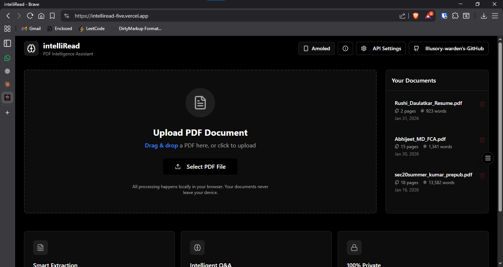
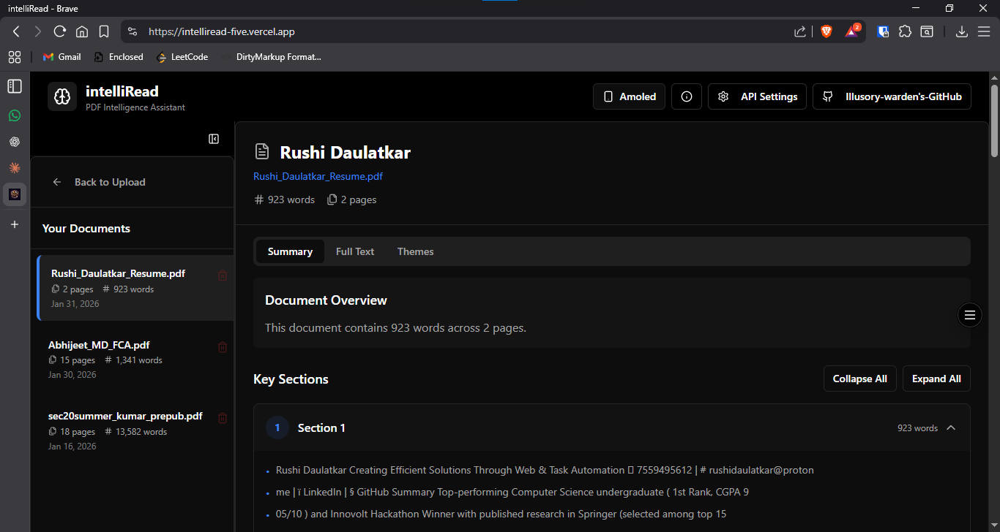
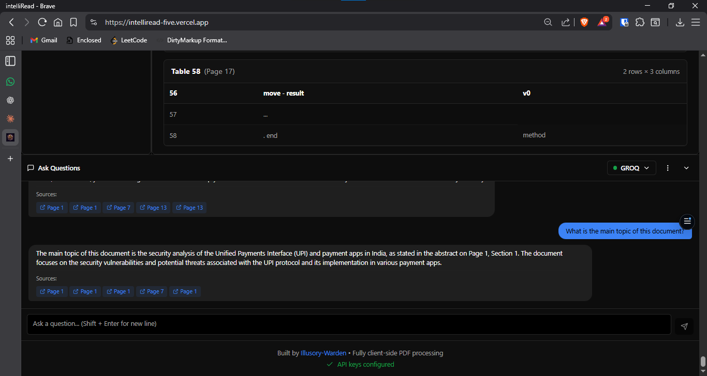
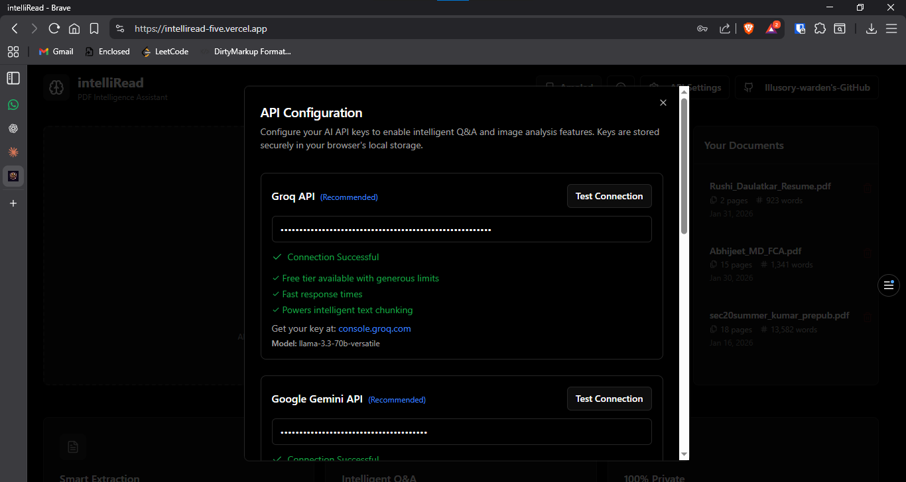
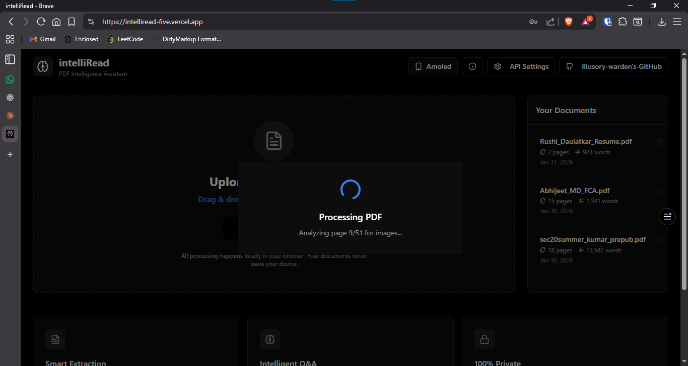

IntelliRead – PDF Intelligence Platform
Program: Intel Unnati Industrial Training (Jan 2025)
Duration: Jan 2025
Technologies: React, TypeScript, Vite, PDF.js, IndexedDB, Groq AI, Google Gemini, Perplexity, Anthropic Claude, Tailwind CSS, shadcn/ui, idb
Category: AI-Powered Document Intelligence, Enterprise Software, Knowledge Management
Description
IntelliRead is a local-first, browser-only PDF intelligence platform developed as part of the Intel Unnati Industrial Training program. It transforms enterprise PDFs into searchable, structured knowledge using AI-powered analysis, eliminating the need for backend servers or external databases.
Organizations manage thousands of PDFs—manuals, reports, policies, research papers—but finding specific information across these documents is time-consuming. IntelliRead solves this by making PDFs queryable: it preserves document structure, extracts tables, analyzes images with AI, and enables semantic search with natural language Q&A powered by multiple AI providers.
Built with 100% client-side processing using IndexedDB for local storage, IntelliRead ensures complete data privacy—your documents never leave your device. All PDF parsing, text extraction, chunking, and indexing happens in the browser, with AI providers called only for image descriptions and answering questions.
Screenshots
Main interface showing document upload and processing
Document viewer with sections, tables, and image tabs
AI-powered Q&A interface with cited answers and page references
API configuration modal for Groq, Gemini, Perplexity, and Anthropic
Real-time processing progress with stage indicators
Key Features
Intelligent Document Processing
- Structure Preservation: Maintains headings, sections, chapters, and page numbers from the original PDF
- Smart Chunking: Splits content at natural boundaries (sentences, paragraphs, sections) without breaking words mid-sentence
- Table Extraction: Detects and extracts tables with row/column integrity preserved
- Image Analysis: AI-generated descriptions make visual content (charts, diagrams, scanned pages) fully searchable
- Multi-Format Support: Text-based PDFs, mixed PDFs with images, image-only PDFs (scanned documents), and chart-heavy documents
AI-Powered Search & Q&A
- Semantic Search: Find content by meaning, not just exact keywords
- Multi-Provider AI: Choose between Groq (fast responses), Perplexity (web-grounded), Anthropic Claude (complex reasoning), or Google Gemini (image analysis)
- Cited Answers: AI responses include page references for verification and traceability
- Document-Scoped: Answers are grounded in your uploaded documents, not general knowledge
- Chat Export: Download conversation history as PDF for documentation
Privacy-First Architecture
- 100% Client-Side: All processing happens in your browser—no server uploads, no cloud storage
- IndexedDB Storage: Documents persist locally with browser-managed encryption
- API Calls Only When Needed: AI providers are called only for image descriptions (Gemini) and answering questions (Groq/Perplexity/Anthropic)
- User-Controlled Keys: You provide and manage your own API keys—no data shared with third parties
Supported PDF Types
Standard PDFs with selectable text. Direct text extraction via PDF.js with full section and table detection.
Documents combining text and images. Hybrid extraction with AI image analysis for charts and diagrams embedded in text content.
Scanned documents or photo PDFs. Full page rendering to PNG with Gemini AI descriptions for searchable content.
Data visualizations and technical diagrams. AI-powered chart interpretation with data point extraction.
Technical Implementation
System Architecture
- Frontend Framework: React 18 with TypeScript for type safety and modern component architecture
- Build Tool: Vite for fast development and optimized production builds
- UI Components: shadcn/ui with Tailwind CSS for consistent, responsive design
- PDF Processing: PDF.js (client-side) for text extraction, page rendering, and image detection
- Storage: IndexedDB via idb library for efficient document, chunk, and chat history storage
- AI Providers: Groq (llama-3.3-70b-versatile), Google Gemini (gemini-2.5-flash-lite), Perplexity (sonar-pro), Anthropic Claude (claude-sonnet-4)
Processing Pipeline
- File loaded into browser memory using FileReader API
- PDF.js parses document structure and extracts metadata
- Total page count, outline, and document properties determined
- Text extraction using page.getTextContent() for each page
- Image detection via operator list analysis
- Page classification: TEXT, IMAGE_ONLY, or MIXED
- Image-only pages rendered to PNG at 2x scale
- Images sent to Gemini API for detailed descriptions
- AI-generated descriptions stored as searchable text
- Text and image descriptions merged into unified page array
- Table detection and extraction with row/column integrity
- Section heading identification using regex patterns
- Content split at sentence boundaries (never mid-word)
- Target chunk size: 800 characters; max: 1200 characters
- Metadata attached: documentId, sectionTitle, pageStart/End
- Documents, sections, chunks, tables, and images stored in separate stores
- Indexed by documentId for fast retrieval
- Status updated to "indexed" when complete
Search & Retrieval
- Keyword Search: Term frequency scoring with exact match bonus and partial match support
- Chunk Retrieval: Top-k chunks retrieved based on relevance score (typically k=5)
- Context Building: Retrieved chunks formatted with section titles and page references
- AI Query: Context sent to selected AI provider with user question
- Citation Display: Responses shown with inline page citations for verification
Challenges & Solutions
Solution: Implemented AI-powered image description using Google Gemini. Image-only pages are rendered to PNG and sent to Gemini API, which generates detailed text descriptions. These descriptions are indexed as searchable text, making visual content fully queryable.
Solution: Developed smart chunking algorithm that splits content at sentence boundaries while preserving section metadata. Each chunk carries documentId, sectionTitle, and page range, ensuring retrieved content maintains its original context when displayed to users.
Solution: Created unified API client with provider-specific adapters. Each provider (Groq, Gemini, Perplexity, Anthropic) implements a consistent interface, allowing seamless switching while handling provider-specific authentication, rate limits, and response formats.
Solution: Adopted local-first architecture with 100% client-side processing. Documents are stored in IndexedDB and never uploaded to servers. AI providers receive only necessary data (image blobs for description, text chunks for Q&A), and users provide their own API keys for complete control.
Solution: Implemented progressive processing with visual progress indicators. Pages are processed in batches, images are analyzed in parallel (max 3 concurrent), and IndexedDB transactions are batched for efficiency. Large documents are handled incrementally to prevent memory issues.
Project Structure
- /components/ui: shadcn/ui base components (Button, Card, Dialog, Tabs, etc.)
- /components/Header.tsx: App header with navigation and settings access
- /components/PDFViewer.tsx: Document viewer with tabs for Content, Tables, and Images
- /components/ChatInterface.tsx: Q&A chat panel with provider selection
- /components/DocumentLibrary.tsx: Document list and management UI
- /components/APISettingsModal.tsx: API key configuration per provider
- pdfProcessor.ts: Orchestrates PDF ingestion, text extraction, image detection, and chunking
- textChunker.ts: Splits content at sentence boundaries with metadata preservation
- imageExtractor.ts: Detects image-only pages and renders them to PNG blobs
- apiClient.ts: Unified interface for all AI providers (Groq, Gemini, Perplexity, Anthropic)
- vectorSearch.ts: Keyword search and chunk retrieval with relevance scoring
- db.ts: IndexedDB wrapper using idb library for CRUD operations
- useAPIKeys: Load, save, and validate API keys from IndexedDB
- useChat: Manage chat messages, send queries, handle AI responses
- useDocuments: CRUD operations for documents in IndexedDB
- documents: Document metadata (id, title, pageCount, wordCount, status)
- sections: Extracted sections with page ranges and content
- chunks: Text chunks with metadata for retrieval
- tables: Extracted tables with row/column data
- images: Image metadata and AI-generated descriptions
- chatHistory: Conversation history per document per provider
- apiSettings: API keys for each provider
Learning Outcomes
Technical Skills Developed
- Client-Side PDF Processing: Mastered PDF.js for text extraction, page rendering, and operator list analysis for image detection
- IndexedDB Management: Implemented complex database schema with multi-store transactions and efficient indexing strategies
- AI Provider Integration: Built unified API client supporting multiple providers with different authentication methods and response formats
- Natural Language Processing: Developed chunking algorithms that preserve semantic coherence and document structure
- Privacy-First Design: Architected system with zero server dependencies and complete user data control
- React Advanced Patterns: Implemented custom hooks for state management, memoization for performance, and component composition for reusability
Enterprise Software Principles
- Document Intelligence: Understanding how to transform unstructured PDFs into queryable knowledge bases
- Scalable Architecture: Designing systems that handle large documents (500+ pages) without performance degradation
- Error Handling: Graceful degradation when AI services fail, with clear user feedback and fallback behaviors
- User Experience: Progressive processing indicators, intuitive UI for complex operations, and clear API configuration workflows
Intel Unnati Program Insights
- Industry Best Practices: Applied enterprise-grade architecture patterns learned from Intel Unnati curriculum
- Real-World Problem Solving: Addressed genuine organizational challenges in document management and knowledge retrieval
- Technology Integration: Gained experience integrating multiple AI providers and managing their distinct capabilities
- Quality Assurance: Implemented comprehensive validation, testing strategies, and edge case handling
Performance Metrics
- Text-only PDF (50 pages): 15-30 seconds
- Mixed content PDF (50 pages): 30-60 seconds
- Image-only PDF (50 pages): 2-5 minutes (dependent on AI API latency)
- Text-only documents: ~1000 documents (100 pages each) in typical browser storage
- Mixed content: ~500 documents
- Chunk size optimization: 800 characters target, 1200 max (optimal for semantic coherence)
- Keyword search: <100ms for documents with 5000+ chunks
- Context retrieval: Top-5 chunks retrieved in <50ms
- AI response time: 1-3 seconds (Groq), 2-5 seconds (Claude/Perplexity)
Future Enhancements
Advanced Features
- Vector embeddings for true semantic search using cosine similarity
- Cross-document search to query across entire document library
- Document comparison and diff analysis
- Annotation and highlighting with collaborative features
- Export to Markdown, JSON, or CSV formats
AI Capabilities
- Fine-tuned models for domain-specific documents (legal, medical, technical)
- Multi-language OCR support for international documents
- Automated summarization and key insight extraction
- Knowledge graph generation from document relationships
Enterprise Features
- Team collaboration with shared document libraries
- Role-based access control for sensitive documents
- Audit logs for document access and queries
- Integration with enterprise document management systems
- Custom API endpoints for workflow automation